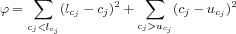
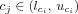
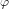

Evolutionary Strategies with Stochastic Ranking (SRES) [
Runarsson00] is similar to
Evolutionary Programming. However, a parent has multiple offsprings during each generation. Each offspring will contain a recombination of genes with another parent and additional mutations. The algorithm assures that each parameter value will be within its boundaries. But constraints to the solutions may be violated. Whenever this happens the square of the size of the violation is summed up, i.e., we calculate
 u_{c_{j}}} (c_{j}-u_{c_{j}})^{2}$">
where the constraints are given by . The value  is used within the selection, which is performed as described in
Genetic Algorithm SR.
Options for Evolutionary Strategy (SRES)
- Number of Generations
- The parameter is a positive integer value to determine the number of generations the algorithm shall evolve the population. The default is '200.'
- Population Size
- The parameter is a positive integer value to determine the size of the population, i.e., the number of individuals that survive after each generation. The default is '20'.
- Random Number Generator
- The parameter is an enumeration value to determine which random number generator this method shall use. COPASI provides two random number generators R250 [Maier91] (selected through the value 0) and the Mersenne Twister [Matsumoto98] (selected through the value 1 (default)).
- Seed
- The parameter is a positive integer value to determine the seed for the random number generator. A value of zero instructs COPASI to select a "random" value.
- Pf
- This parameter is a numerical value in the interval (0, 1) determining the chance that individuals either outside the parameter boundaries or violating the constraints are compared during the selection. The default is '0.475'.